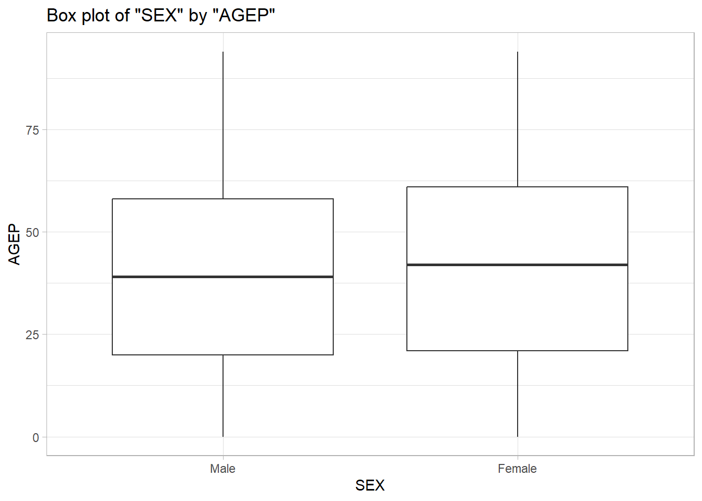

Public Use Microdata Sample (PUMS) Census API Query
The Public Use Microdata Sample (PUMS) Census API is a freely available resource that anyone can access to acquire pseudo person-level data collected for the U.S census. In order to access this immense data set we will have to interact with the application program interface (API), which is a set of protocols and rules that allows applications to communicate with a database. In this case we are going to be using R in order to access the API, and to start we are going to need to load in some very useful packages.
Please read the notes in the code chunk below to better understand why we are loading in these packages:
library(tidycensus) #Package built to allow users to return Census Bureau API data as tibbleslibrary(httr) #Provides a list of easy to use statements like get() for APIslibrary(jsonlite) #Package that provides a JSON parser and generatorlibrary(dplyr)
Attaching package: 'dplyr'
The following objects are masked from 'package:stats':
filter, lag
The following objects are masked from 'package:base':
intersect, setdiff, setequal, union
library(tibble) #Used to create tibbles and is a part of tidyverselibrary(ggplot2) #Used for plottinglibrary(tidyr) #Used to make data "wide"library(hms) #Converts 00:00 or 00:00:00 to a time variablelibrary(lubridate)
Attaching package: 'lubridate'
The following object is masked from 'package:hms':
hms
The following objects are masked from 'package:base':
date, intersect, setdiff, union
Helper Function
The next step we need to take is to create a helper function to assist with the query process for APIs. This function will convert the raw content to character strings, parse the JSON data, and then convert the data into a tibble. If you read through you will see that additional code has been added on that will further assist with the processing of the data we will receive from the query process. The added on functions will be explained in details later on in this document.
# Helper function to process API responseprocess_api_response <-function(api_response) {# Check if the response was successfulif (api_response$status_code !=200) {stop("Error: API request failed with status code ", api_response$status_code) }# Convert raw content to character string content_string <-rawToChar(api_response$content)# Parse JSON data parsed_data <-fromJSON(content_string)# First row contains column names, the rest is the data column_names <- parsed_data[1, ] data_rows <- parsed_data[-1, ]# Convert to tibble and set column names tibble_data <-as_tibble(data_rows)colnames(tibble_data) <- column_names#creating new variable in order to check if variables are numeric valid_numeric_vars <-c("AGEP", "GASP", "GRPIP", "JWAP", "JWDP", "JWMNP", "PWGTP")#Created loop to convert proper numeric variables to numericfor(var incolnames(tibble_data)){if(var %in% valid_numeric_vars){ tibble_data[[var]] <-as.numeric(tibble_data[[var]]) } }#New variable to check for categorical variables valid_categorical_vars <-c("FER", "HHL", "HISPEED", "JWTRNS", "SCH", "SCHL", "SEX")#Created loop to convert proper categorical variables to factorfor(var incolnames(tibble_data)){if(var %in% valid_categorical_vars){ tibble_data[[var]] <-as.factor(tibble_data[[var]]) } }#Creating levels for each categorical variableif ("SEX"%in%colnames(tibble_data)) { tibble_data <- tibble_data |>mutate(SEX =factor(SEX, labels = SEX_levels)) }if ("SCHL"%in%colnames(tibble_data)) { tibble_data <- tibble_data |>mutate(SCHL =factor(SCHL, labels = SCHL_levels)) }if ("SCH"%in%colnames(tibble_data)) { tibble_data <- tibble_data |>mutate(SCH =factor(SCH, labels = SCH_levels)) }if ("JWTRNS"%in%colnames(tibble_data)) { tibble_data <- tibble_data |>mutate(JWTRNS =factor(JWTRNS, labels = JWTRNS_levels)) }if ("HISPEED"%in%colnames(tibble_data)) { tibble_data <- tibble_data |>mutate(HISPEED =factor(HISPEED, labels = HISPEED_levels)) }if ("HHL"%in%colnames(tibble_data)) { tibble_data <- tibble_data |>mutate(HHL =factor(HHL, labels = HHL_levels)) }if ("FER"%in%colnames(tibble_data)) { tibble_data <- tibble_data |>mutate(FER =factor(FER, labels = FER_levels)) }#Pasting correct time values in for JWAPif("JWAP"%in%colnames(tibble_data)) { tibble_data <- tibble_data |>left_join(JWAP_intervals, join_by(JWAP)) |>rename(work_arrival_time = middle_time,arrival_meridiem = meridiem) |>select(-JWAP) } #Pasting correct time values in for JWDPif("JWDP"%in%colnames(tibble_data)) { tibble_data <- tibble_data |>left_join(JWDP_intervals, join_by(JWDP)) |>rename(work_departure_time = middle_time2,departure_meridiem = meridiem2) |>select(-JWDP) } return(tibble_data)}
The next step is to create a year validation function in order to confirm only the correct years (2022 to 2010) are queried by the user. This function alongside other subsequent ones will be added to the main API query that we are creating, that way we can insure a user only selects variables that will work with our API query.
# Function to validate the yearvalidate_year <-function(year) {cat("API year is :", year)if (year <2010|| year >2022) {stop("Invalid year. Year must be between 2010 and 2022.") }}
After we create our year validation function we make another function that insures our user will only select the valid numeric and categorical variables our query will work with, and if the user does not select these variables they will get an error message letting them know what variables they can use instead. Additionally, the function insures that the PWGTP variable is always included with our query, as that variable is a representation of the number of people each row actually represents, specifically it is our weight variable.
# Function to validate numeric variablesprocess_numeric_vars <-function(numeric_vars =c("AGEP", "PWGTP")) { valid_numeric_vars <-c("AGEP", "GASP", "GRPIP", "JWAP", "JWDP", "JWMNP", "PWGTP")# Check PWGTP is always includedif (!"PWGTP"%in% numeric_vars) { numeric_vars <-c(numeric_vars, "PWGTP") }# Validate numeric variablesif (!all(numeric_vars %in% valid_numeric_vars)) {stop("Invalid numeric variables. Valid options: AGEP, GASP, GRPIP, JWAP, JWDP, JWMNP, PWGTP.") }# Check at least one numeric variable other than PWGTPif (!any(numeric_vars %in% valid_numeric_vars[valid_numeric_vars !="PWGTP"])) {stop("At least one numeric variable other than PWGTP must be returned.") } } # Function to validate categorical variablesprocess_categorical_vars <-function(categorical_vars =c("SEX")) { valid_categorical_vars <-c("FER", "HHL", "HISPEED", "JWTRNS", "SCH", "SCHL", "SEX")# Validate categorical variablesif (!all(categorical_vars %in% valid_categorical_vars)) {stop("Invalid categorical variables. Valid options: FER, HHL, HISPEED, JWAP, JWDP, JWTRNS, SCH, SCHL, SEX.") }return(categorical_vars)}
Looking ahead when we pull the time variables JWAP and JWDP out of the API they appear as character strings that represent a time interval for the period in which a person generally begins work, such as 09:00 a.m to 09:04 a.m. This proves to be a problem for us as we we can not present the interval in a neat easily understandable manner for the user, so to make things more consistent and readable we will have the time variables return as the middle time between the interval. To do this is quite a complicated tasks, and will require the usage of the readr which will allow us to separate the character strings into usable columns. Due to the complexity of this we are going to extract the exact data for the whole variable in the API, then use separate_wider_delim to create two columns that represent the start and end of the time variable. Since the time variables are represented in the character strings as “00:00” we can use the parse_hm() function to have the columns for the start and end of the intervals represented in HH:MM:SS format, once they are in that format the start and end columns can be subtracted then divided by two and added to the start to get the middle of the interval for each observation. In order to aid readability the time variables are going to be renamed to work_arrival_time or work_departure_time, in addition the proper am or pm designation columns (meridian) will appear next to the variables. That way the user will still be able to manipulate the variables as a time variable and know if the variable is for the morning or night.
# Function to process time variablesprocess_time_variable <-function(variable_name) {# Grabbing information from API temp <- httr::GET(paste0("https://api.census.gov/data/2022/acs/acs1/pums/variables/", variable_name, ".json")) temp_list <- temp$content |>rawToChar() |> jsonlite::fromJSON()# Getting just the variable names and their values time_values <- temp_list$values$item time_vals_sorted <- time_values[sort(names(time_values))]# Converting the values into a tibble time_tibble <-tibble(id =seq(0, length(time_vals_sorted) -1), value = time_vals_sorted)# Converting to wide format time_wide <-separate_wider_delim(time_tibble, cols =c("value"), delim =" ", names =c("start", "meridiem", "to", "end", "meridiem_2"), too_few ="debug", names_repair ="unique", too_many ="drop") # Select the needed rows and convert to usable format time_intervals <- time_wide |>select(id, start, meridiem, end, meridiem_2) |>#meridiem is to track if values were for am or pmmutate(start =parse_hm(start),end =parse_hm(end),variable_name = id) # Make row 1 display NA across all columns for row 1 time_intervals[1, ] <-NA# Creating middle time value variable time_intervals <- time_intervals |>mutate(interval = (end - start) /2,interval =as.numeric(interval),interval =as.period(interval))# Turning start into a period time_intervals <- time_intervals |>mutate(start =as.period(start),middle_time =as.duration(start + interval)) |>select(middle_time, variable_name, meridiem) # Turning the first row variable back to 0 time_intervals[1, 2] <-0# Converting back to a time variable time_intervals <- time_intervals |>mutate(middle_time = hms::hms(seconds = middle_time))return(time_intervals)} #Renaming variables to insure they work in the helper functionJWAP_intervals <-process_time_variable("JWAP")
Warning: Debug mode activated: adding variables `value_ok`, `value_pieces`, and
`value_remainder`.
When we look at ahead we realize that if we pull in our categorical data we will not necessarily understand it as it is lacking the proper levels for the data contained, necessitating that we create proper level keys for the variables we will be querying. This will follow a similar process to how we got the time variables, but will be much simpler. Once we acquire the necessary levels we will go back in to our helper function to convert the categorical variables to factors and include the proper levels and labels for each one.
# Function to process categorical variablesprocess_cat_variable <-function(variable_name) {# Grabbing information from API temp <- httr::GET(paste0("https://api.census.gov/data/2022/acs/acs1/pums/variables/", variable_name, ".json")) temp_list <- temp$content |>rawToChar() |> jsonlite::fromJSON()# Getting just the variable names and their values cat_values <- temp_list$values$item cat_vals_sorted <- cat_values[sort(names(cat_values))]# Converting the values into a tibble cat_tibble <-tibble(id =seq(0, length(cat_vals_sorted) -1), value = cat_vals_sorted) cat_vector <- cat_tibble$valuereturn(cat_vector)}#Running function for categorical variables to store levelsSCHL_levels <-process_cat_variable("SCHL")SEX_levels <-process_cat_variable("SEX")SCH_levels <-process_cat_variable("SCH")JWTRNS_levels <-process_cat_variable("JWTRNS")HISPEED_levels <-process_cat_variable("HISPEED")HHL_levels <-process_cat_variable("HHL")FER_levels <-process_cat_variable("FER")
Main function: Query the API
Now that we have done some setup we need to start creating the function that will be accessing the API for us. The first step will be to provide some defaults for the year, numeric variables, categorical variables, and geography levels. Then we will include the functions that validate if the user chose the correct variables, after that we will create the base URL, then the paste function that will paste the choosen variables into the query. The GET() function will then be used to access the API and if that is successful the data will be processed with our helper function into a nice looking tibble.
# Main function: Query the APIquery_census_pums <-function(year =2022,numeric_vars =c("AGEP", "PWGTP"),categorical_vars =c("SEX"),geography_level ="All",geography_subset =NULL) {# Validate the yearvalidate_year(year)# Validate numeric variablesprocess_numeric_vars(numeric_vars)# Validate categorical variablesprocess_categorical_vars(categorical_vars)# Get API URL base_url <-"https://api.census.gov/data" pathparam <-"acs/acs1/pums"# Get the full URL url <-paste0(base_url, "/", year, "/", pathparam, "?get=", paste(c(numeric_vars, categorical_vars), collapse =",")) # Check geography subset and add it to API callif (!is.null(geography_subset)) { url <-paste0(url, "&for=", geography_level, ":", geography_subset) }print(url)# API call using httr::GET api_response <-GET(url)# Check if the request was successfulif (http_error(api_response)) {stop("API request failed: ", status_code(api_response)) }# Process the response into a tibble data <-process_api_response(api_response)# Return the data return(data)}print(url)
function (description, open = "", blocking = TRUE, encoding = getOption("encoding"),
method = getOption("url.method", "default"), headers = NULL)
{
method <- match.arg(method, c("default", "internal", "libcurl",
"wininet"))
if (!is.null(headers)) {
nh <- names(headers)
if (length(nh) != length(headers) || any(nh == "") ||
anyNA(headers) || anyNA(nh))
stop("'headers' must have names and must not be NA")
headers <- paste0(nh, ": ", headers)
headers <- list(headers, paste0(headers, "\r\n", collapse = ""))
}
.Internal(url(description, open, blocking, encoding, method,
headers))
}
<bytecode: 0x000001c77eac1378>
<environment: namespace:base>
In order to make sure that everything was running smoothly we tested the example query below:
# Example for the single year 2022 with numeric and categorical variablesresult <-query_census_pums(year =2022, numeric_vars =c("AGEP", "PWGTP", "GASP", "JWDP", "JWAP", "JWMNP"),categorical_vars =c("SEX", "HISPEED", "FER", "SCH"),geography_level ="state",geography_subset ="10")
API year is : 2022[1] "https://api.census.gov/data/2022/acs/acs1/pums?get=AGEP,PWGTP,GASP,JWDP,JWAP,JWMNP,SEX,HISPEED,FER,SCH&for=state:10"
Warning: The `x` argument of `as_tibble.matrix()` must have unique column names if
`.name_repair` is omitted as of tibble 2.0.0.
ℹ Using compatibility `.name_repair`.
#Printing resultsprint(result)
# A tibble: 9,641 × 13
AGEP PWGTP GASP JWMNP SEX HISPEED FER SCH state work_arrival_time
<dbl> <dbl> <dbl> <dbl> <fct> <fct> <fct> <fct> <chr> <time>
1 84 76 3 0 Female N/A (GQ/v… N/A … No, … 10 NA
2 39 20 3 0 Female N/A (GQ/v… No No, … 10 NA
3 19 92 3 0 Female N/A (GQ/v… No Yes,… 10 NA
4 77 19 3 0 Female N/A (GQ/v… N/A … No, … 10 NA
5 18 32 3 0 Female N/A (GQ/v… No Yes,… 10 NA
6 32 80 3 0 Male N/A (GQ/v… N/A … No, … 10 NA
7 50 132 3 0 Male N/A (GQ/v… N/A … No, … 10 NA
8 23 19 3 20 Male N/A (GQ/v… N/A … Yes,… 10 06:22
9 20 47 3 0 Female N/A (GQ/v… No Yes,… 10 NA
10 18 201 3 0 Female N/A (GQ/v… No Yes,… 10 NA
# ℹ 9,631 more rows
# ℹ 3 more variables: arrival_meridiem <chr>, work_departure_time <time>,
# departure_meridiem <chr>
Now that we have validated that our query is working properly we now need to add on the ability for the user to query multiple years. In order to do this we will make a new query function that creates a loop for each year as specified by the user, and runs said loop through our initial query function in order to get data for each year. This new year data will be added to our tibble with the bind_rows() function.
# 6. Function for multiple yearsquery_multiple_years <-function( years, numeric_vars =c("AGEP", "PWGTP"), categorical_vars =c("SEX"), geography_level ="All", geography_subset =NULL) { all_years_data <-list()# Loop through each yearfor (year in years) {# Check if the year is valid#validate_year(year)cat("\nyear:", year)# Validate the year. if (year <2010|| year >2022) {print(paste("Skipping invalid year:", year))next# Skip this iteration and continue with the next year }# Get data for the current year using the single year function yearly_data <-query_census_pums(year = year,numeric_vars = numeric_vars,categorical_vars = categorical_vars,geography_level = geography_level,geography_subset = geography_subset )# Add a year column yearly_data$year <- year# Store the current year data in the list all_years_data[[as.character(year)]] <- yearly_data }# Combine all the data into one dataset final_data <-bind_rows(all_years_data) #Adding census class to tibbleclass(final_data) <-c("census", class(final_data))# Return datasetreturn(final_data)}
Testing the multi-year query to see if it is working correctly:
# Example of multiple years of datamulti_year_result <-query_multiple_years(years =c( 2016, 2017, 2018), numeric_vars =c("AGEP", "PWGTP", "JWAP", "GRPIP" ), categorical_vars =c("SEX", "HISPEED", "SCH", "FER"), geography_level ="state", geography_subset ="10")
year: 2016API year is : 2016[1] "https://api.census.gov/data/2016/acs/acs1/pums?get=AGEP,PWGTP,JWAP,GRPIP,SEX,HISPEED,SCH,FER&for=state:10"
year: 2017API year is : 2017[1] "https://api.census.gov/data/2017/acs/acs1/pums?get=AGEP,PWGTP,JWAP,GRPIP,SEX,HISPEED,SCH,FER&for=state:10"
year: 2018API year is : 2018[1] "https://api.census.gov/data/2018/acs/acs1/pums?get=AGEP,PWGTP,JWAP,GRPIP,SEX,HISPEED,SCH,FER&for=state:10"
# View the resultprint(multi_year_result)
# A tibble: 26,939 × 11
AGEP PWGTP GRPIP SEX HISPEED SCH FER state work_arrival_time
<dbl> <dbl> <dbl> <fct> <fct> <fct> <fct> <chr> <time>
1 51 90 0 Female Yes No, … N/A … 10 06:12
2 32 153 0 Male Yes No, … N/A … 10 06:02
3 68 17 0 Male N/A (GQ/vacant/… No, … N/A … 10 NA
4 63 19 0 Female N/A (GQ/vacant/… No, … N/A … 10 NA
5 82 34 0 Female No No, … N/A … 10 NA
6 52 65 0 Female No No, … N/A … 10 NA
7 33 80 0 Female No No, … No 10 NA
8 26 66 0 Female No No, … No 10 NA
9 3 65 0 Female No Yes,… N/A … 10 NA
10 39 61 0 Female Yes No, … No 10 11:02
# ℹ 26,929 more rows
# ℹ 2 more variables: arrival_meridiem <chr>, year <dbl>
Now we want to see if we can create another function in order to get the weighted mean and standard deviation for each of our numeric variables. This will provide the user with a useful tool to quickly acquire basic information on each variable they choose.
# Define custom summary function for the 'census' classsummary.census <-function(census_data, numeric_vars =NULL, categorical_vars =NULL) {# Ensure PWGTP exists and is numericif (!"PWGTP"%in%names(census_data)) {stop("Weight variable 'PWGTP' is missing from the dataset.") }# Separate numeric and categorical columns from the dataif (is.null(numeric_vars)) { numeric_vars <-names(census_data)[sapply(census_data, is.numeric) &names(census_data) !="PWGTP"] }if (is.null(categorical_vars)) { categorical_vars <-names(census_data)[sapply(census_data, is.factor)] }# Weighted mean and standard deviation calculations summarize_numeric <-function(var_name, data) { numeric_vector <-as.numeric(data[[var_name]]) weight_vector <-as.numeric(data[["PWGTP"]])# Check for missing values in the weight vectorif (any(is.na(weight_vector))) {stop("Missing values found in the weight variable 'PWGTP'.") }# Calculate weighted mean weighted_mean <-sum(numeric_vector * weight_vector, na.rm =TRUE) /sum(weight_vector, na.rm =TRUE)# Calculate weighted standard deviation weighted_var <-sum(numeric_vector^2* weight_vector, na.rm =TRUE) /sum(weight_vector, na.rm =TRUE) weighted_sd <-sqrt(weighted_var - weighted_mean^2)return(list(mean = weighted_mean, sd = weighted_sd)) }# Initialize a list to store the summary results summary_list <-list()# Summarize numeric variablesfor (var in numeric_vars) { summary_list[[var]] <-summarize_numeric(var, census_data) }# Summarize categorical variables (counts)for (var in categorical_vars) { summary_list[[var]] <-table(census_data[[var]], useNA ="ifany") }return(summary_list)}
Now we are creating another function that will allow the user to create a box plot that compares a categorical variable by a numeric variable. This will provide our users with another tool to aid them in analyzing the data they query.
#Creating function for user to create weighted box plotsplot.census <-function(tibble_data, categorical_var, numeric_var) {#Telling user they must specify at least one categorical variableif (missing(categorical_var) ||missing(numeric_var)){stop("Must include one categorical variable and one numeric variable") }#Telling user time variables can not be use as numeric variablesif ("JWAP"%in% numeric_var){stop("JWAP is a time variable") }if ("JWDP"%in% numeric_var){stop("JWDP is a time variable") } p <-ggplot(tibble_data, aes(x =get(categorical_var), y =get(numeric_var), weight = PWGTP)) +geom_boxplot() +labs(title =paste("Box plot of", deparse(substitute(categorical_var)), "by", deparse(substitute(numeric_var))), x = categorical_var, y = numeric_var) +theme_light() print(p)}#Plot exampleplot.census(multi_year_result, "SEX", "AGEP")

Census API Investigation
Now that we have created our functions and API Query we need to use it to analyze some data. Something interesting may come from analyzing gross rent as a percentage of household income of the past 12 months (GRPIP), and see what we may find relating to it. In particular I want to examine the relationship between household language spoken at home (HHL) and the variable GRPIP
$AGEP
$AGEP$mean
[1] 41.56009
$AGEP$sd
[1] 23.81078
$GRPIP
$GRPIP$mean
[1] 7.823032
$GRPIP$sd
[1] 19.05969
$year
$year$mean
[1] 2022
$year$sd
[1] 0
$SEX
Male Female
4534 5107
$HHL
N/A (GQ/vacant) English Only
305 7819
Spanish Other Indo-European languages
703 381
Asian and Pacific Island languages Other Language
252 181
We can now see that the mean age is 41.56 years with a standard deviation of 23.81 years, and the mean gross rent as percentage of household income is 7.82% with a standard deviation of 19.06%. The reason for the large standard deviation is that many individuals do not buy rent as they may own their own house, meaning many individuals pay 0% of their household income in rent.
In order to get a better picture of the categorical variables we are going to write some quick code to determine the total percent for each level for SEX and HHL. In order to do this we need to create weighted counts for the variables that we will be looking at.
#Function to give weighted counts percent.summary <-function(query, cat_var ="SEX", weight ="PWGTP"){ weight_query <- query |>select(!!sym(cat_var), !!sym(weight)) |>group_by(!!sym(cat_var)) |>summarize(weighted_var =sum(!!sym(weight)))#creating a total column to create percentages weight_query <- weight_query |>mutate(total =sum(weighted_var),percentage = (weighted_var / total) *100) |>select(cat_var, weighted_var, percentage)return(weight_query)} #creating summary tables for variablespercent.summary(rent_query, "SEX")
Warning: Using an external vector in selections was deprecated in tidyselect 1.1.0.
ℹ Please use `all_of()` or `any_of()` instead.
# Was:
data %>% select(cat_var)
# Now:
data %>% select(all_of(cat_var))
See <https://tidyselect.r-lib.org/reference/faq-external-vector.html>.
# A tibble: 2 × 3
SEX weighted_var percentage
<fct> <dbl> <dbl>
1 Male 493340 48.4
2 Female 525056 51.6
percent.summary(rent_query, "HHL")
# A tibble: 6 × 3
HHL weighted_var percentage
<fct> <dbl> <dbl>
1 N/A (GQ/vacant) 22688 2.23
2 English Only 803203 78.9
3 Spanish 96655 9.49
4 Other Indo-European languages 41809 4.11
5 Asian and Pacific Island languages 30577 3.00
6 Other Language 23464 2.30
#Converting summary tables to
Based on the results from running our function, we can find that about 48.4% of the individuals in our query are male and 51.6% are female. In terms of household languages we find that about 78.9% of the individuals in our query speak English at home, 9.49% speak Spanish, 4.11% speak other Indo-European languages, 2.23% were listed as N/A, 3.0% speak an Asian or Pacific Island language, and 2.3% speak another language not listed.
Now we are going to use our plot function to compare household language spoken at home by household income paid in gross rent.
plot.census(rent_query, "HHL", "GRPIP")
As we can see from our results due to many people not paying any household income in rent that the data becomes hard to read in a box plot format, so lets take away any values equal to zero to get a better look at the data just for individuals who do pay for rent. To do this we are going to use the filter function to take out each observation in our data set where GRPIP is equal to zero.
#filtering out non-rentersrenters_only <- rent_query |>filter(GRPIP !=0) #only returning data where GRPIP does not equal 0#New plot only of rentersrenters_only_plot <-plot.census(renters_only, "HHL", "GRPIP")
renters_only_plot
Now it is much easier to look at the data for renters only, but before we do any further analysis I wanted to see the difference in which percent of each household language group was paying rent or not paying rent.
#Filtering so only non-renters only are returnednonrenters_only <- rent_query |>filter(GRPIP ==0) #Using percent.summary to find percentages nonrenters_tibble <-percent.summary(nonrenters_only, "HHL")nonrenters_tibble <- nonrenters_tibble |>mutate(total =sum(weighted_var)) # grabbing total for anylasis purposesrenters_tibble <-percent.summary(renters_only, "HHL")renters_tibble <- renters_tibble |>mutate(total =sum(weighted_var))#Printing tablesnonrenters_tibble
# A tibble: 6 × 4
HHL weighted_var percentage total
<fct> <dbl> <dbl> <dbl>
1 N/A (GQ/vacant) 22688 2.86 791938
2 English Only 638969 80.7 791938
3 Spanish 60292 7.61 791938
4 Other Indo-European languages 31572 3.99 791938
5 Asian and Pacific Island languages 22315 2.82 791938
6 Other Language 16102 2.03 791938
renters_tibble
# A tibble: 5 × 4
HHL weighted_var percentage total
<fct> <dbl> <dbl> <dbl>
1 English Only 164234 72.5 226458
2 Spanish 36363 16.1 226458
3 Other Indo-European languages 10237 4.52 226458
4 Asian and Pacific Island languages 8262 3.65 226458
5 Other Language 7362 3.25 226458
#Calculating percent non-renters and renterstotal_renters <- (226458/ (226458+791938)) *100total_renters
Based off these results, we have found that renters make up 22.24% and non-renters make up 77.76% of the individuals in our query. In terms of percents of non-renters by household spoken language we found that 80.7% speak English at home, 7.61% speak Spanish at home, 3.99% speak another Indo-European language at home, 2.82% speak an Asian or Pacific Island language at home, 2.03% speak some other langauge at home, and 2.86% were marked as NA. In terms of percents of renters by household spoken language we found that 72.5% speak English at home, 16.1% speak Spanish at home, 4.52% speak another Indo-European language at home, 3.65% speak an Asian or Pacific Island language at home, and 3.25% speak some other language at home. English only speakers appear to be over represented among the non-renters compared to their portion of the data set, as we would expect the percentages between non-renters and renters to be consistent between household language spoken at home. This may suggest that household language spoken at home is correlated with not renting, but further analysis would need to be undertaken to come to the conclusion a relationship exist.
Now to go back to our initial interest, we need to look back at out box plots of non-renters by gross percent of household income spent on renting. Looking at the box plots we can see that the average percent for all groups ranges from roughly 15 to 30 percent, with Spanish speakers having the highest percent and Other Indo-European Language speakers having the lowest average percent. In terms of spread English only, Spanish only, and Asian and Pacific Island Languages group have fairly large spreads for their IQRs. The other language group has the smallest IQR and overall has the shortest range, that is noticeable pronounced when excluding outliers. While the reason for the difference in average percents and range can not be parsed out by this short initial analysis it is clear that there is a wide range of variance between the groups indicating some other factors may be at play. A future analysis should look into if there is a correlation between income or wealth and household language spoken at home, as that may be influencing the data.